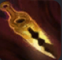 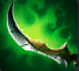 
초반에주는덱에서 각이 보인다면 가는게좋다
총잡이 - 갱플,루시안,트타,그브
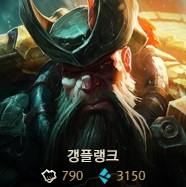 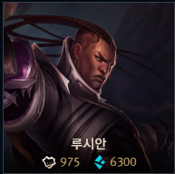 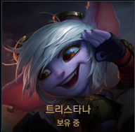 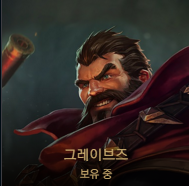해적 - 갱플,그브,파이크,트페
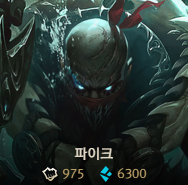 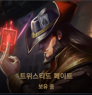검사 - 쉔,갱플,아트록스,야스오,피오라,드레이븐
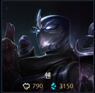 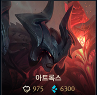 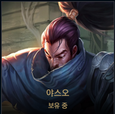

---------------------운영방법---------------------
초반에 조금 맞더라도 해적덱이 갖춰지면 해적으로 연패하면서 골드수급을 해준다
해적이 안되면 그냐야 총잡이 시너지로 이기거나 버티면 된다 (굳이 연승에 목 멜 필요 없음)
이상태로 골렘까지 레벨업을 한번도 안누르게되면 4레벨에 걸치게되는데
이때 모아둔30~40원으로 모두 리롤을 돌려준다
(보통 운이 좋으면 3성이 2개찍히거나 애매하게 한두개 부족하거나 그럼)
이렇게 갖춰진 3성에 템을 넣어주고 패면 된다
이자를 모아서 하는 리롤이 마음에 들지않으면 초반에 빡센 리롤도 괜찮긴하다
---------------------참고영상-------------------------
아래는 또다른 방법인 다른 여타 덱들과 같은 초반패스트 렙업을 통한 총잡이덱이다.